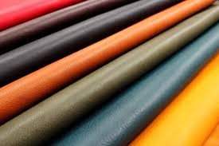
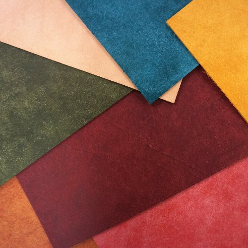
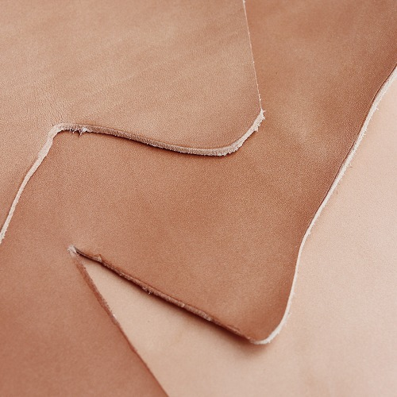
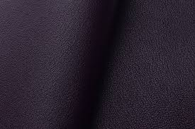

가죽이란?
가죽은 동물의 피부를 화학적으로 처리해 부패를 막고 내구성을 높인 소재입니다. 주로 소, 돼지, 양 등의 가죽이 사용되며, 내구성과 고급스러운 질감 때문에 의류, 가방, 신발, 가구 등에 널리 활용됨.
가죽의 역사
가죽은 선사시대부터 의복과 생활용품에 사용된 가장 오래된 소재 중 하나이다. 고대 이집트, 그리스, 로마 등에서도 신발, 갑옷, 문서 등에 활용되었다. 현대에는 가공 기술의 발달로 패션, 가구, 자동차 등 다양한 산업에 쓰인다.
가죽의 특징
가죽은 내구성이 뛰어나고 시간이 지날수록 자연스러운 멋이 더해지는 소재이이다. 통기성과 유연성도 좋아 착용감이 우수하며, 관리에 따라 오래 사용할 수 있다.
가죽의 주의점
가죽은 물과 직사광선에 약해 변색이나 경화가 발생할 수 있다. 습기와 오염에 주의하며, 정기적인 관리와 보관이 필요하다.
- 베지터블 가죽
- 
- 푸에블로 가죽
- 
- 내추럴 가죽
- 
- 크리스페 가죽
- 